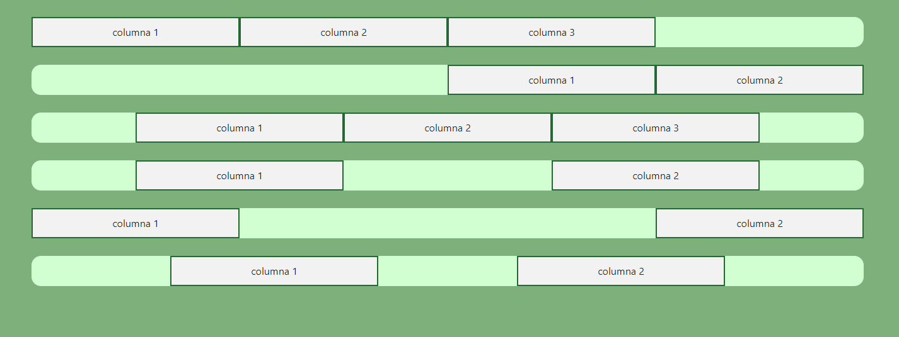
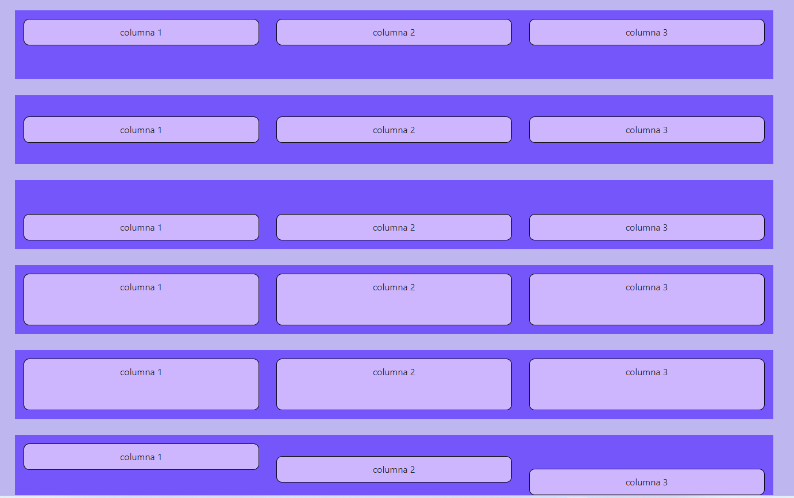
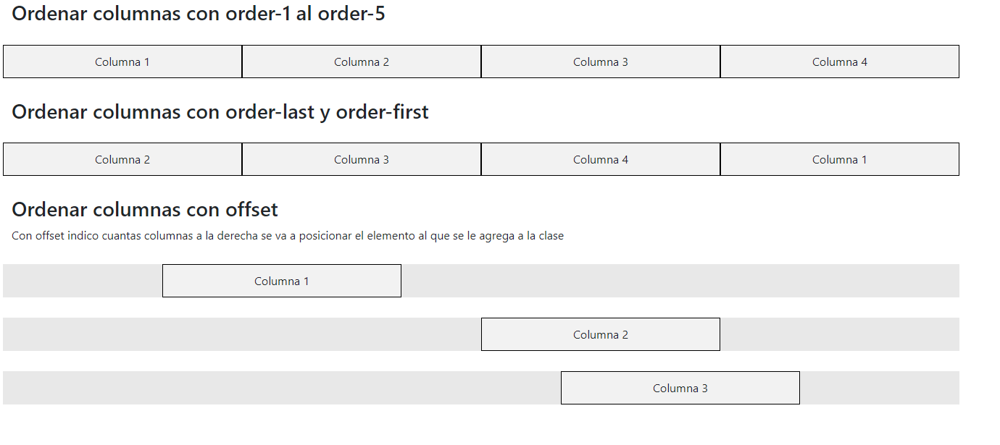
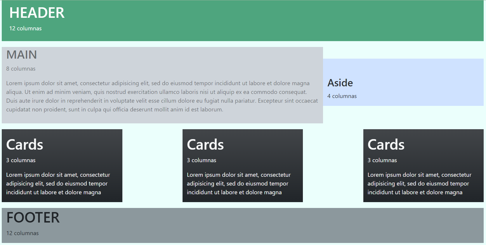

Alineado de columnas verticalmente
Another exciting bit of representative placeholder content. This time, we've moved on to the second column.

Alineado de columnas horizontalmente
And lastly this, the third column of representative placeholder content.

Utilidades de Grid en Boostrap
Cambio de div sin la necesidad de cortar y pegar la línea de código. Además del cambio de tamaño cada que la ventana del navegador cambie de tamaño.

Diseño responsivo
Utilizamos el background del los divs y el color de las letras con ayuda de Bootstrap.
Álbum de fotografias
Con ayuda de una plantilla en Bootstrap plasmamos momentos que son especiales.